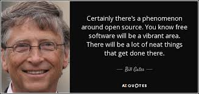
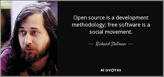

<body style="background-image:url(../src/app/images/background2.jpg);">
    <div class="container">
        <div class="row" >
            <div class="col-md-6">
                <div class="container">
                    <div class="well well-lg"  style="background-color:brown;">
                        <div class="jumbotron" style="background-color:lavenderblush;">
                            <div class="page-header">
                                <h3 class="text-center">About Us</h3>
                            </div>
                            <button type="button" (click)="show=!show" class="btn btn-info btn-block"> <strong>{{show?'Show All':'Hide All'}}</strong></button>
                            <div *ngIf="show;else elseBlock"></div>
                            <ng-template #elseBlock>
                                
                                <p>   Open source is a type of licensing agreement that allows users to freely modify a work, use said work in new ways, integrate the work into a larger project or derive a new work based on the original. By removing barriers between innovators, open source promotes a free exchange of ideas within a community to drive creative, scientific and technological advancement.</p><br>

                                
                                <p> <b>Flexibility: </b> When your business uses proprietary software such as Microsoft Windows and Office, you are on a treadmill that requires you to keep upgrading both software and hardware ad infinitum. Open source software, on the other hand, is typically much less resource-intensive, meaning that you can run it well even on older hardware. It's up to you--not some vendor--to decide when it's time to upgrade.</p><br>

                                
                                <p> <b>Interoperability: </b>Open source software is much better at adhering to open standards than proprietary software is. If you value interoperability with other businesses, computers and users, and don't want to be limited by proprietary data formats, open source software is definitely the way to go.</p><br><br>

                                
                                <p> <b>Support Options: </b>Open source software is generally free, and so is a world of support through the vibrant communities surrounding each piece of software. Most every Linux distribution, for instance, has an online community with excellent documentation, forums, mailing lists, forges, wikis, newsgroups and even live support chat.</p>

                                <p>For businesses that want extra assurance, there are now paid support options on most open source packages at prices that still fall far below what most proprietary vendors will charge. Providers of commercial support for open source software tend to be more responsive, too, since support is where their revenue is focused.</p><br>
                            </ng-template>
                        </div>
                    </div>
                </div>
            </div>

        </div>
    </div>
</body>
